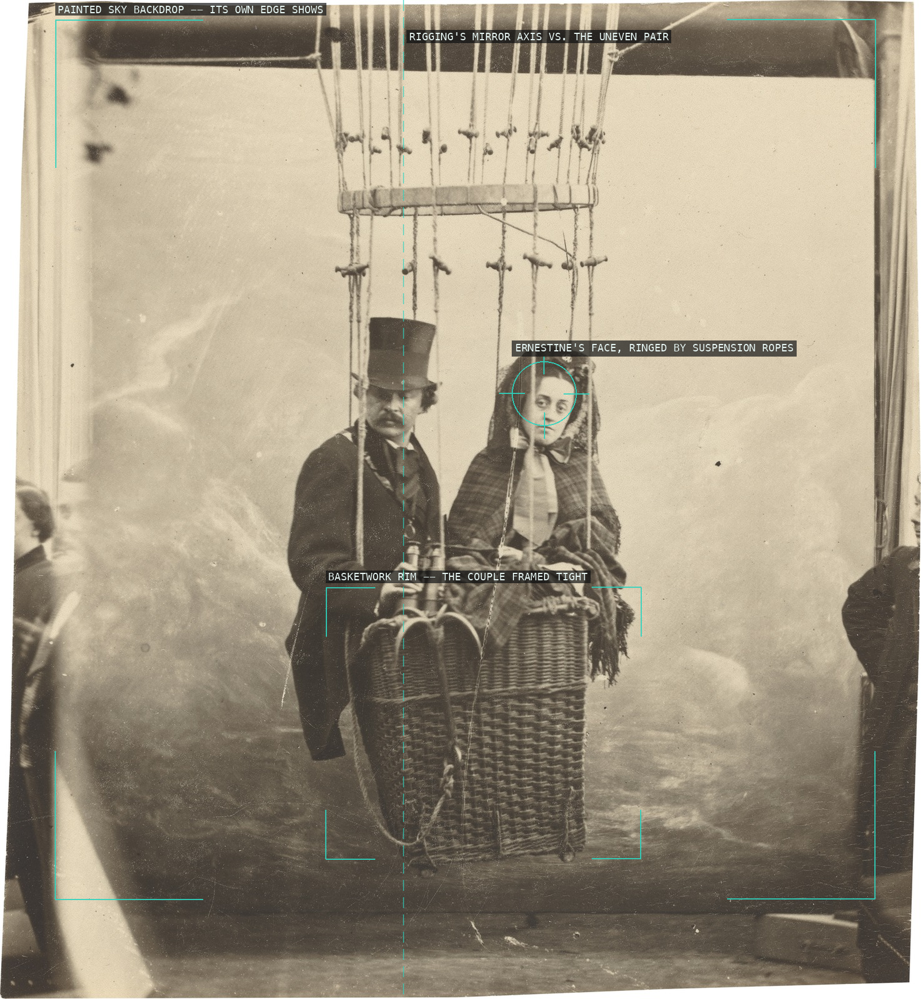
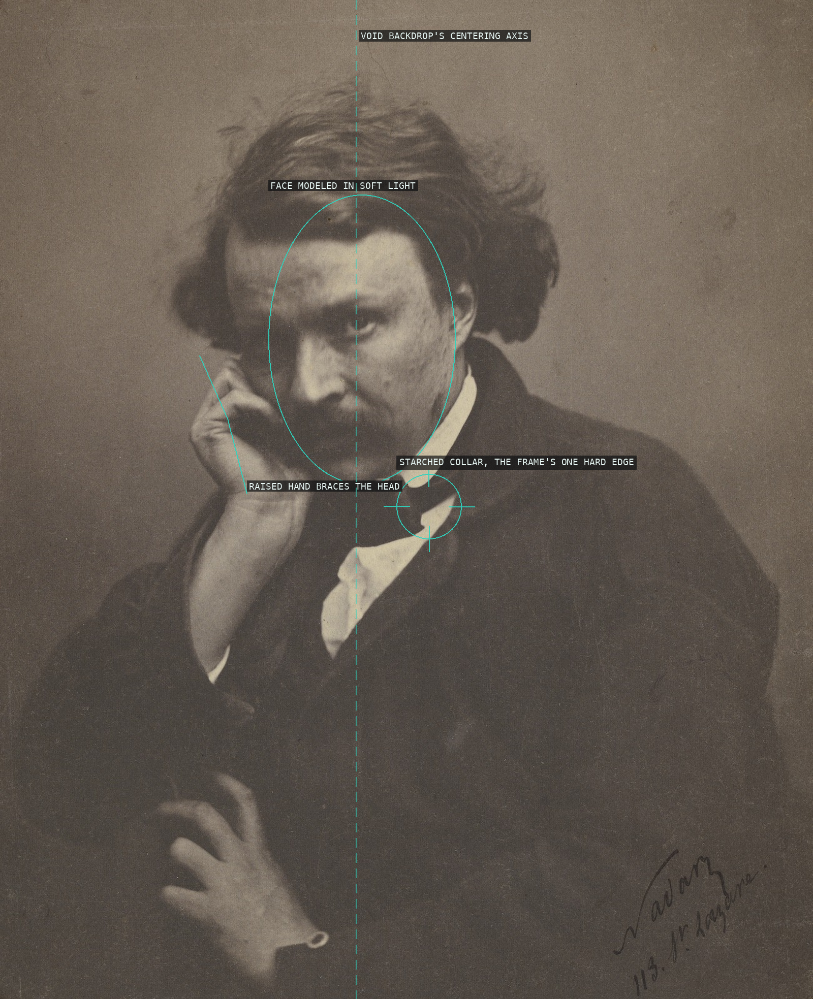
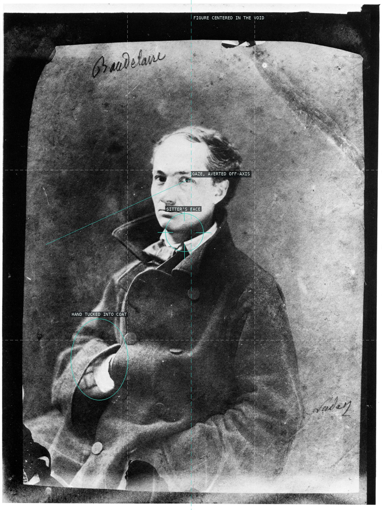
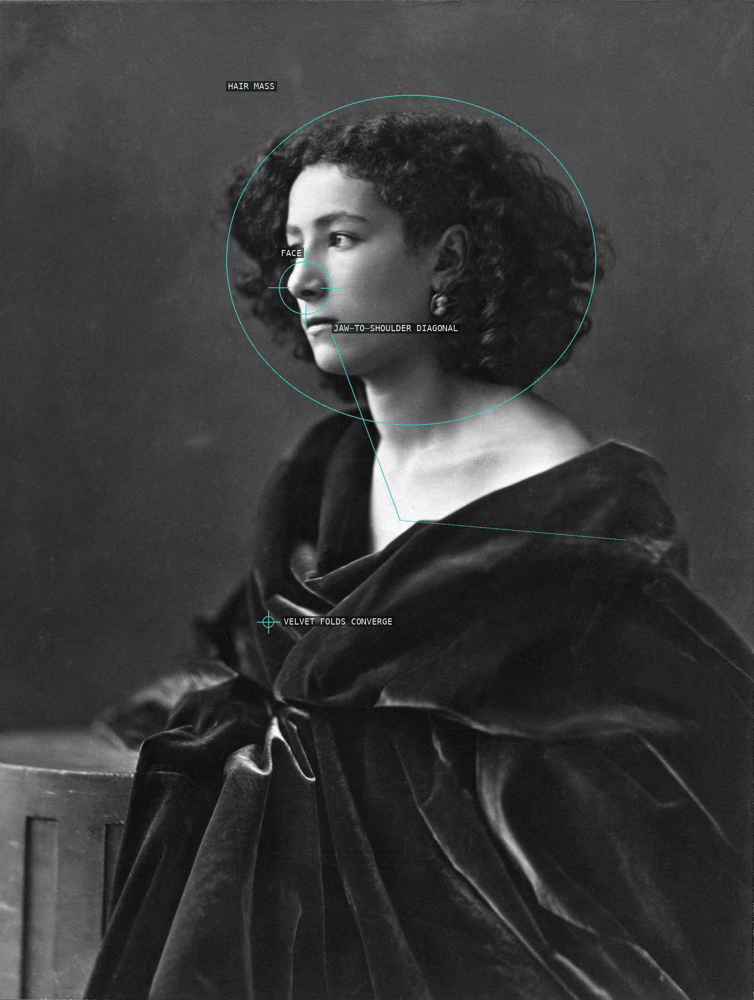
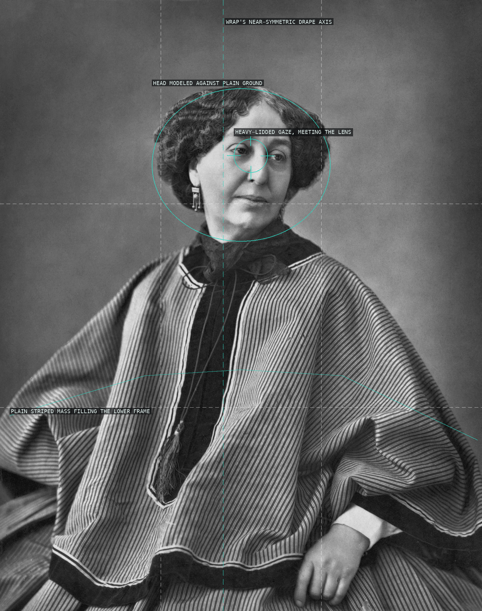
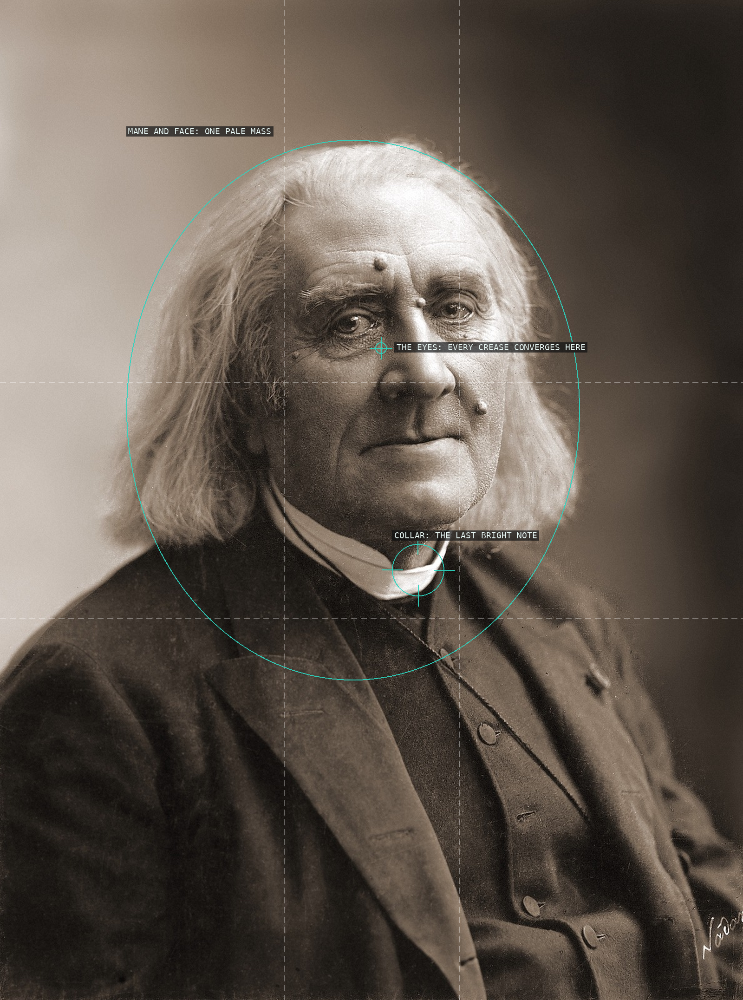
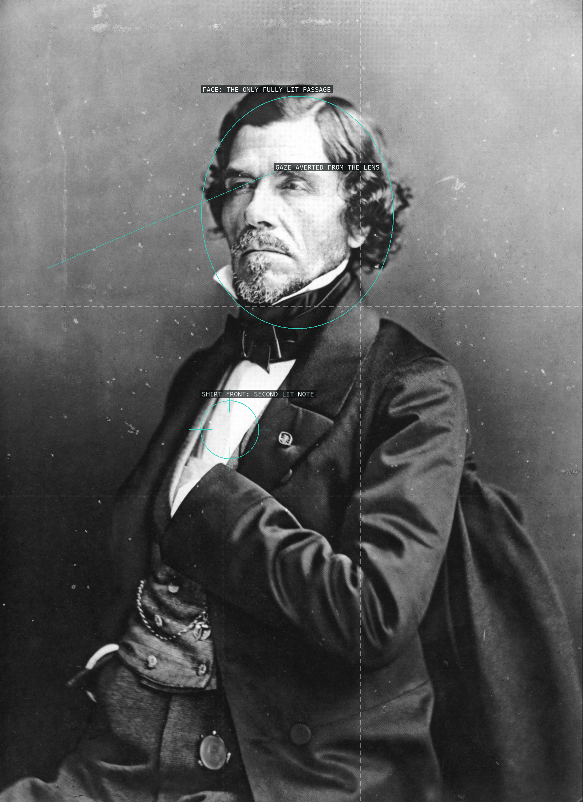
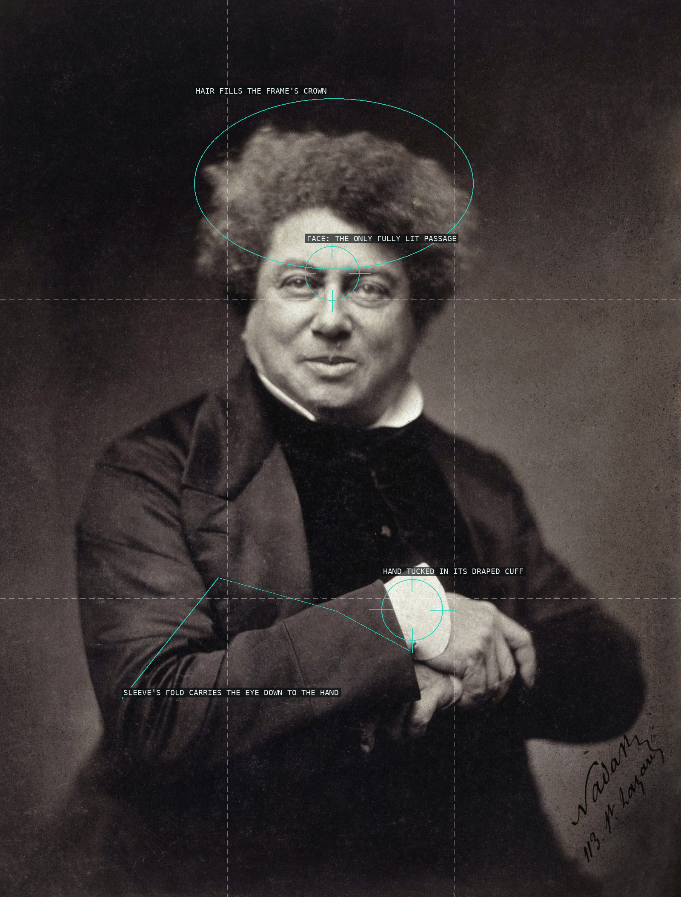
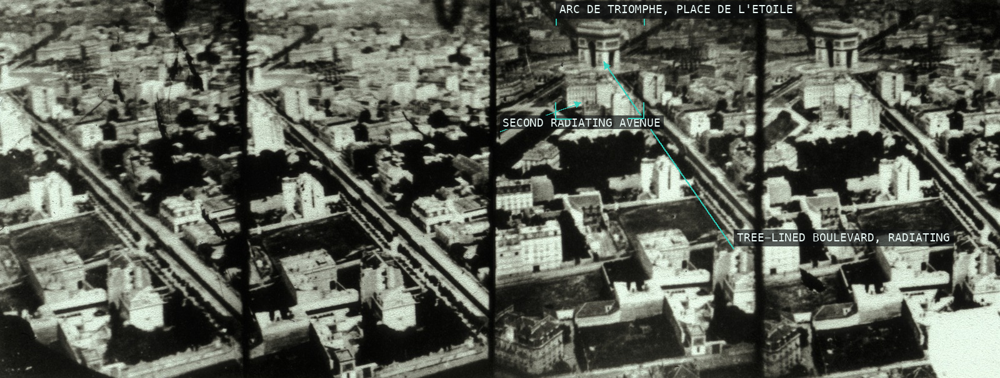

A studio publicity stunt for 'Le Geant': the sitters are boxed tight in the basket's weave and hung in near-symmetric rigging, while the painted sky's own visible edge -- and the onlookers just beyond it -- gives away that this 'ascent' never left the ground.

Against the same blank void he gave his sitters, Nadar isolates his own soft-lit face and bracing hand, broken only by one crisp edge: the starched collar.

A face modeled by soft light against total black: the gaze breaks off-axis and the hand tucks into the coat, so the void backdrop and rigid vertical symmetry carry all the psychological weight.

The jaw-to-bare-shoulder diagonal, not a squared seated pose, carries the composition, anchored by her face and echoed in the velvet's own gathered folds.

A portrait staked entirely on facial modeling -- the writer's heavy-lidded gaze meets the lens directly despite the three-quarter turn, while the wrap's near-symmetric, uneventful drape fills the lower frame with nothing to compete for attention.

A working artist rather than a celebrity: Doré turns off the backdrop's own symmetry axis, his gaze cast out of frame while the checked scarf cuts the one bold diagonal through the chiaroscuro.

Seated frontally in three-quarter light, Liszt's pale hair and face fuse into one lit mass whose eyes gather every furrow and hair-strand, while the dark coat and darkening backdrop close around it like a memorial void.

Two isolated passages of light -- the face and the white shirt-front -- survive in a portrait otherwise dissolved into black coat and grey void, while Delacroix's eyes break off-axis, refusing the lens.

A void ground concentrates the eye on two lit passages, face and draped hand, while an unruly crown of hair fills the frame's top third.

Shot straight down from Nadar's balloon, the Place de l'Etoile's radiating boulevards flatten into a plan-view star converging on the Arc de Triomphe -- a geometry only overhead flight could reveal.

Depth is built from light and dark rather than converging lines: the eye moves from a lit foreground skull wall, along its own receding edge, past a single lamp-struck pier, into a bone gallery that simply goes black.